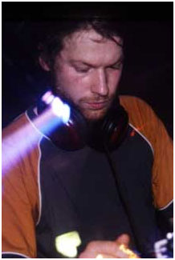

Richard D. James was born on August 18, 1971, in Cornwall, England. As a child, Richard was fascinated with sound. Fascinated in a way that most musical prodigies aren't, or as he may come to represent a new precedent, didn't used to be. He wasn't only interested in the standard definition of music per se(i.e. harmonies, melodies, conventional structures, etc.), but also in the otherworldy textures possible to create through technology.
Experimenting with computers, sequencers, keyboards and reel-to-reel tape, he was inventing his own synthesizers by the age of thirteen, and recording his own material by, at most, the age of fourteen, if not sooner. Throughout his teens, he created hundreds of electronic works, purely for his own pleasure. As he grew, he held several menial jobs, including ditch digging.
But he no doubt kept the dream alive that he would one day be a professional musician. And indeed, he had begun to D.J. in his home town, garnering serious attention.
Here are some great resources that shine more light on Aphex's past: